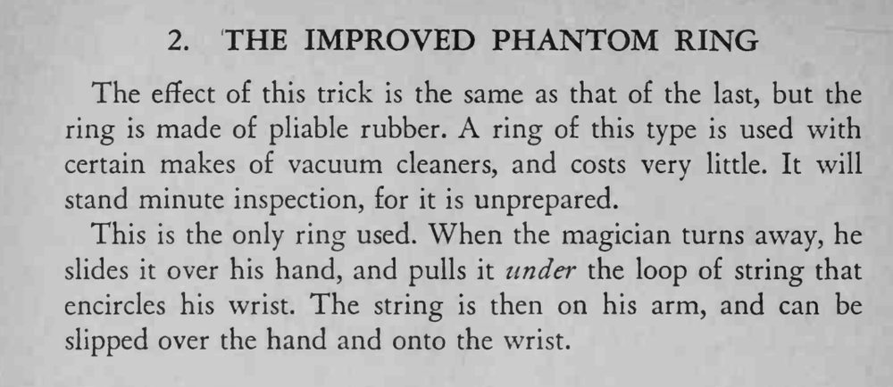

同样的效果：被绑住的双手之间突然出现一只检查过的环，这次它其实是一只可以随意拉扯的软橡胶环。
橡胶环要软而有韧性，褪绳圈时动作连贯，不要让观众先看见环在手臂上。

The effect of this trick is the same as that of the last, but the ring is made of pliable rubber. A ring of this type is used with certain makes of vacuum cleaners, and costs very little. It will stand minute inspection, for it is unprepared. This is the only ring used. When the magician turns away, he slides it over his hand, and pulls it under the loop of string that encircles his wrist. The string is then on his arm, and can be slipped over the hand and onto the wrist.